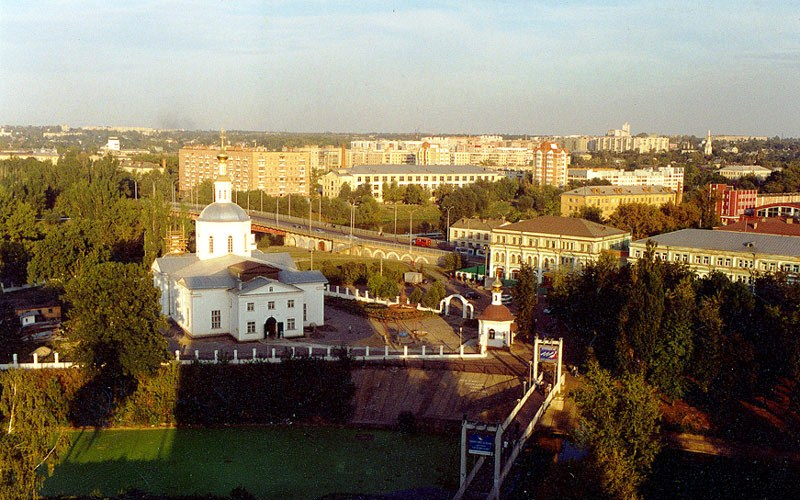

Мой Родной город Орел
Орёл — город (с 1566) в России, административный центр Орловской области. Расположен в 368 км к юго-западу от Москвы, на Среднерусской возвышенности в европейской части России, по обеим сторонам реки Оки и её притока Орлика. Орёл и Орловская область входят в состав Центрального федерального округа, а также Центрального экономического района.
Население города — 317 076 чел. (2014).Происхождение названия Орёл связывают с легендой о событиях, произошедших при основании нового города в 1566 году. По велению Царя Ивана Грозного началось строительство города-крепости для охраны южных границ Русского государства от набегов крымских татар. Когда стали рубить дуб, росший на берегу, у слияния двух рек Оки и Орлика, с вершины дерева слетел орёл. «А вот и хозяин», — сказал один из мужиков. Иван Васильевич и повелел назвать город именем птицы.
По другой версии, учитывая связь между названиями Орёл и Орлик, эти названия происходят от татарского слова «ор», что в переводе на русский означает ров, а «орлик» — означает что-либо (в зависимости от контекста, и в данном случае это речка) пригодное под ров, а «орёл» (точнее «ор-ёл», где «ёл» значит дорога) — дорога через ров.
Источник: Wikipedia.org
